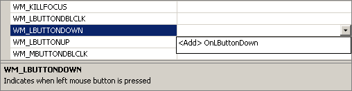

"The Same Game", Part 2 of 5: Creating a Playable Game
"The Same Game", Part 2 of 5: Creating a Playable Game
By: Ben Marchant
Creating a Playable Game
By the end of this article we will have a "playable" version of the SameGame. I have playable in quotes because we will have the game in a state the will allow the player to click to remove blocks and end the game when there are no more valid moves left. The game won't be very feature-rich but will be playable. In the remaining articles we'll add more features to increase the difficulty and allow the game to be customized a little.
As for this article we'll be looking into event driven programming and how to get our game to respond to mouse clicks. Once we can respond to clicks we'll discuss the algorithm we'll use to remove the blocks and finally, how to tell when the game is over.
Event Driven Programming
Event driven programming, if you've never done it before, is a complete paradigm change in programming. If this isn't your first encounter with event driven programming then go ahead and skip to the next section.
Up till now you've probably only written procedural programs in C++. The difference between the two types of programming paradigms is that the flow of control in event driven programming is determined by events not a predetermined set of steps. It is a reactive program. The user does something like click on a button and the program reacts to that event by executing some code. The main loop in an event driven program simply waits for an event to happen then calls the appropriate event handler and goes back to wait for another event. An event handler is a piece of code that is called each time a specific event happens.
Mouse Clicks
The MFC library is inherently event driven and therefore makes it pretty easy for us to create event handlers and respond to any event that we want. To set up event handling in MFC, Visual Studio lists all of the messages that are available to respond to. In this case messages are synonymous with events. All of the Windows messages are constants that start with WM_ followed by the message name. To respond to mouse clicks in the client area of the view there are messages for the left, right and middle mouse buttons. The event that we will use is the WM_LBUTTONDOWN. This message is sent by the MFC framework every time the user clicks the left mouse button down. All we need to do is set up an event handler to listen for this message to be sent and then respond. To add an event handler open up the Properties Window from the CSameGameView header file. Do this by pressing Alt+Enter or from the menu View->Other Windows->Properties Window. Below is what you'll see in the properties window. (If it isn't, make sure your cursor is placed within the class declaration inside the SameGameView.h file.)
In the screenshot my cursor is hovering over the "Messages" section, click on it. Look for the WM_LBUTTONDOWN option, click on it, click the dropdown as shown in the screenshot below and select "<Add> OnLButtonDown".

This will add the OnLButtonDown event handler to your view with some default code in it to call the CView implementation of the function. Here we'll add the following code to the function body (changes in bold) Note that this code won't yet compile, but we'll get to that shortly. That's OK to do—the code won't compile, but it lets us figure out what needs to be done to make this function work, without worrying yet about how to write the other functions we will rely on.
Please do wait to compile the resulting code until you've finished the article, since the changes will cascade; as we go through how to implement each of the functions we need, we'll discover we need more functions. But eventually we'll get through all of them.
void CSameGameView::OnLButtonDown(UINT nFlags, CPoint point)
{
// First get a pointer to the document
CSameGameDoc* pDoc = GetDocument();
ASSERT_VALID(pDoc);
if(!pDoc)
return;
// Get the row and column of the block that was clicked on
int row = point.y / pDoc->GetHeight();
int col = point.x / pDoc->GetWidth();
// Delete the blocks from the document
int count = pDoc->DeleteBlocks(row, col);
// Check if there were any blocks deleted
if(count > 0)
{
// Force the view to redraw
Invalidate();
UpdateWindow();
// Check if the game is over
if(pDoc->IsGameOver())
{
// Get the count remaining
int remaining = pDoc->GetRemainingCount();
CString message;
message.Format(_T("No more moves left\nBlocks remaining: %d"),
remaining);
// Display the results to the user
MessageBox(message, _T("Game Over"), MB_OK | MB_ICONINFORMATION);
}
}
// Default OnLButtonDown
CView::OnLButtonDown(nFlags, point);
}
The two arguments to the function are an integer of bit-flags which can be ignored and a CPoint object. The CPoint object contains the (x, y) coordinate of where the mouse was clicked within your view. We'll use this to figure out which block they clicked. The first few lines of code are familiar to us by now; we are just getting a valid pointer to the document. To find the row and column of the block that was clicked we use some simple integer math and divide the x coordinate by the width of a block and the y by the height.
// Get the row and column of the block that was clicked on
int row = point.y / pDoc->GetHeight();
int col = point.x / pDoc->GetWidth();
Since we are using integer division the result is the exact row and column the user clicked on.
Once we have the row and column we will call a function, DeleteBlocks (we'll add it next) on the document to delete the adjacent blocks. This function will return the number of blocks that it deleted. If none are deleted then the function essentially ends. If there were blocks deleted then we need to force the view to redraw itself now that we've changed the game board. The function call Invalidate() signals to the view that the whole client area needs to be redrawn and UpdateWindow() does that redraw.
int count = pDoc->DeleteBlocks(row, col);
// Check if there were any blocks deleted
if(count > 0)
{
// Force the view to redraw
Invalidate();
UpdateWindow();
// ...
}
}
Now that the board has been updated and redrawn we test if the game is over. In the section entitled "Finishing Condition" we'll go over exactly how we can tell if the game is over. For now we'll just add a call to it.
if(pDoc->IsGameOver())
{
// Get the count remaining
int remaining = pDoc->GetRemainingCount();
CString message;
message.Format(_T("No more moves left\nBlocks remaining: %d"),
remaining);
// Display the results to the user
MessageBox(message, _T("Game Over"), MB_OK | MB_ICONINFORMATION);
}
If the game is over we get the number of blocks remaining on the board and report that to the user. We create a CString object which is MFC's string class and call its built-in format method. The format method behaves just like sprintf(). Here we use the MFC _T() macro to allow for different kinds of strings (i.e. ASCII or wide character formats). We finally call the MessageBox() function that displays a small dialog with the title "Game Over" and the message that we created using the format method. The dialog has an OK button (MB_OK) and an information icon (MB_ICONINFORMATION).
Now that this event handler is in place we need to implement the three functions on the document that we called, IsGameOver, DeleteBlocks and GetRemainingCount. These functions are just simple wrappers for the same functions on the game board. So they can just be added to the header file for the document just after the DeleteBoard function, like the following.
bool IsGameOver() { return m_board.IsGameOver(); }
int DeleteBlocks(int row, int col)
{ return m_board.DeleteBlocks(row, col); }
int GetRemainingCount()
{ return m_board.GetRemainingCount(); }
Once we have added these wrapper functions to the document it is time to modify the game board to take care of these operations. In the header file for the game board add the following public methods (again put them right below the DeleteBoard function).
/* Is the game over? */
bool IsGameOver(void) const;
/* Get the number of blocks remaining */
int GetRemainingCount(void) const { return m_nRemaining; }
/* Function to delete all adjacent blocks */
int DeleteBlocks(int row, int col);
Two of the functions are fairly complex and will require quite a bit of code but the GetRemainingCount function simply returns the count of remaining blocks. We'll store that count a member variable called m_nRemaining. We need to add this to the game board in the private member section of the class.
/* Number of blocks remaining */
int m_nRemaining;
Since we are adding another data member to our class we need to initialize it in the constructor like so (changes bolded).
CSameGameBoard::CSameGameBoard(void)
: m_arrBoard(NULL),
m_nColumns(15), m_nRows(15),
m_nHeight(35), m_nWidth(35), // <-- don't forget the comma!
m_nRemaining(0)
{
m_arrColors[0] = RGB( 0, 0, 0);
m_arrColors[1] = RGB(255, 0, 0);
m_arrColors[2] = RGB(255,255, 64);
m_arrColors[3] = RGB( 0, 0,255);
// Create and setup the board
SetupBoard();
}
We also need to update the count of remaining blocks in the SetupBoard method (changes bolded):
void CSameGameBoard::SetupBoard(void)
{
// Create the board if needed
if(m_arrBoard == NULL)
CreateBoard();
// Randomly set each square to a color
for(int row = 0; row < m_nRows; row++)
for(int col = 0; col < m_nColumns; col++)
m_arrBoard[row][col] = (rand() % 3) + 1;
// Set the number of spaces remaining
m_nRemaining = m_nRows * m_nColumns;
}
Deleting blocks from the board is a two step process. First we change all of the same colored, adjacent blocks to the background color, in essence deleting them, and then we have to move the above blocks down and the blocks to the right, left. We call this compacting the board.
Deleting blocks is a prime candidate for the use of recursion. We'll create a recursive helper function called DeleteNeighborBlocks that is private that will do the bulk of the work of deleting blocks. In the private section of the class right after the CreateBoard() function add the following.
/* Direction enumeration for deleting blocks */
enum Direction
{
DIRECTION_UP,
DIRECTION_DOWN,
DIRECTION_LEFT,
DIRECTION_RIGHT
};
/* Recursive helper function for deleting blocks */
int DeleteNeighborBlocks(int row, int col, int color,
Direction direction);
/* Function to compact the board after blocks are eliminated */
void CompactBoard(void);
We will use the enumeration for direction in the recursive helper function
that will keep us from trying to recurse back to the block we just came from.
Next up is actually implementing the DeleteBlocks algorithm!
Continue to page 2: Implementing the Algorithm for Deleting Blocks